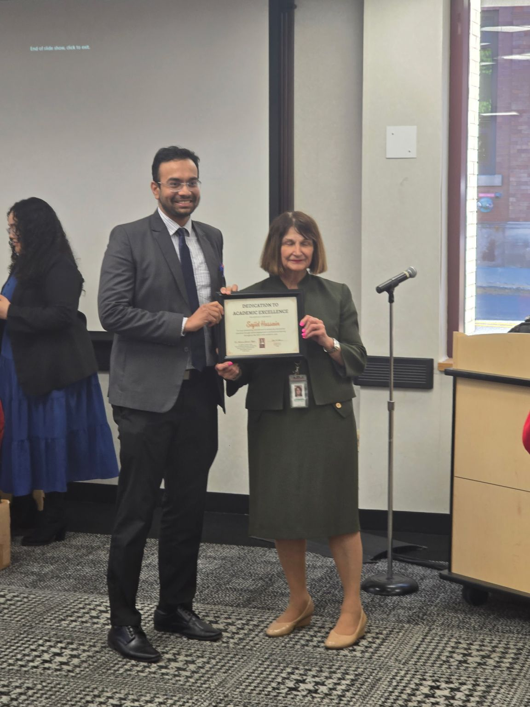
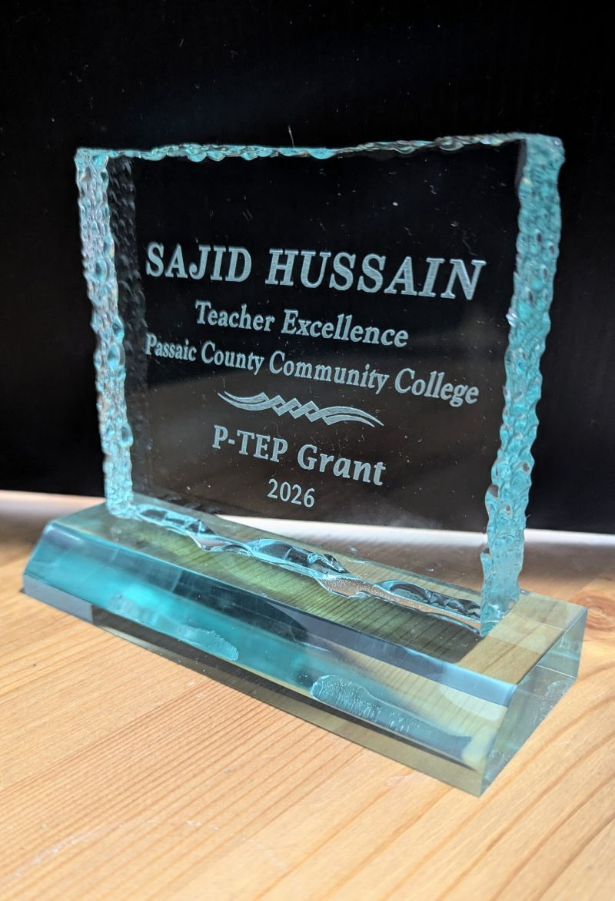
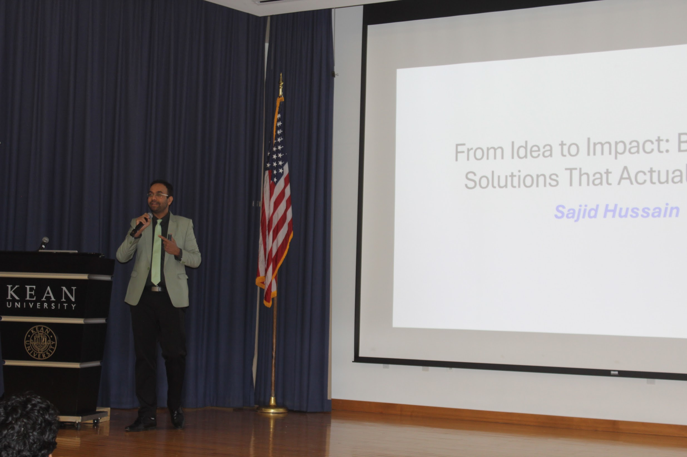
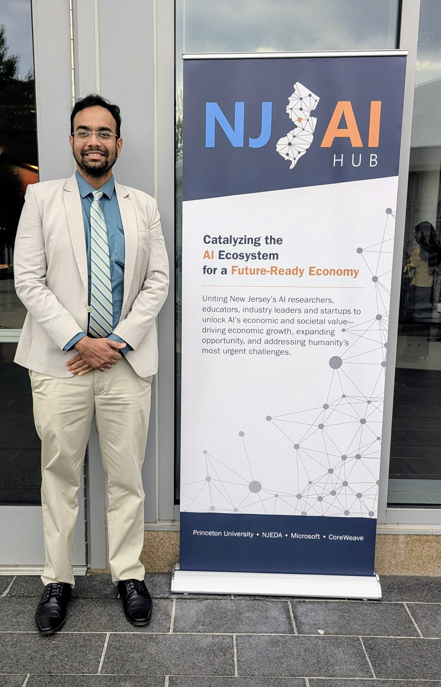
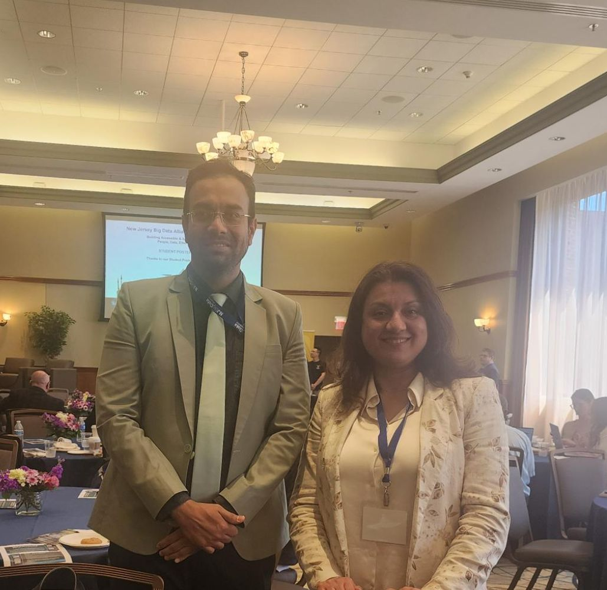
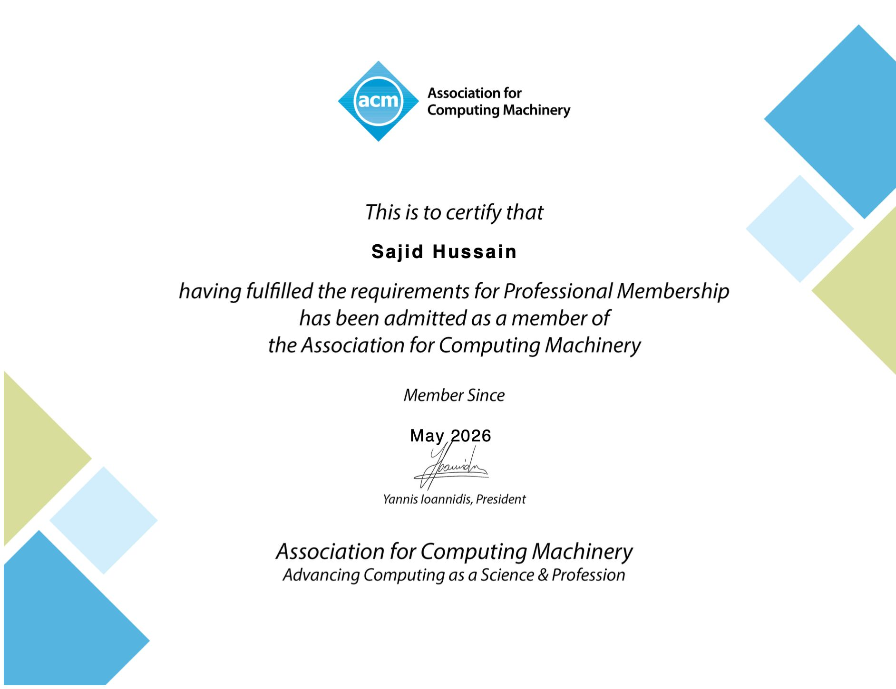
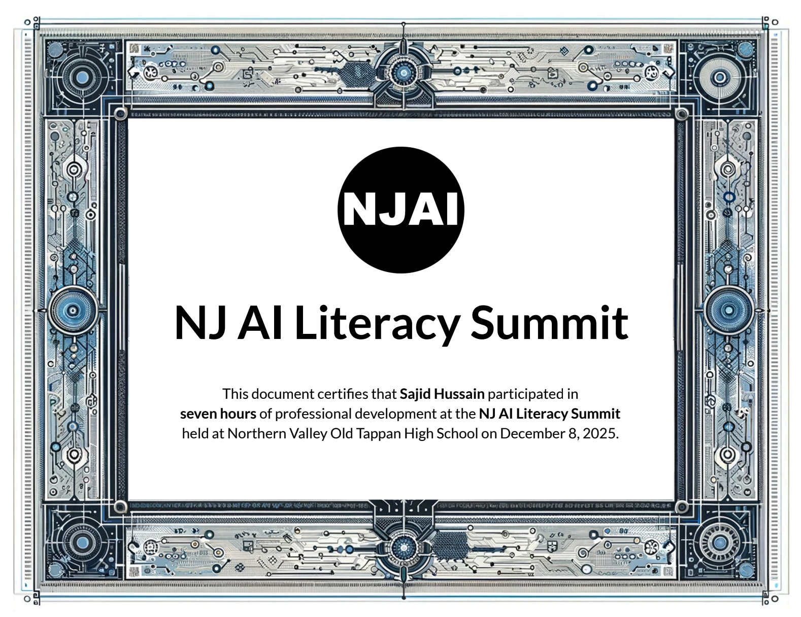

AI ENGINEER · INSTRUCTOR · BUILDER
I build AI systems
and teach what I learn.
I work with Python, LLMs, RAG, agents, evaluation, and the engineering systems around modern AI applications.
My goal is simple: turn ideas into useful, working systems — and make the process understandable to others.
BEYOND THE CODE.
Five awards.
AI is more than what happens inside a code editor. I care about bringing technology to building New Jersey's AI ecosystem, and sharing what I learn along the way.



RECOGNITION · 2026
Honored with five awards at PCCC's Faculty Recognition Day, including the AI Innovation and Integration Award.
I'm grateful to be part of a community that encourages innovation, teaching excellence, and responsible AI adoption in higher education.
Read the announcement on LinkedIn ↗Leading AI Beyond the Code

AI LEADERSHIP · 2026
Invited to deliver the “Idea to Impact” AI workshop at Kean University, sharing perspectives on how artificial intelligence and emerging technologies can transform ideas into meaningful, real-world solutions.
The session focused on moving beyond AI experimentation toward practical innovation, responsible adoption, and measurable impact — connecting technology with the people, problems, and organizations it is designed to serve.
I believe AI leadership is not simply about building models. It is about helping people understand what is possible, identifying where AI creates genuine value, and turning that vision into action.
New Jersey AI Hub

AI COMMUNITY · NEW JERSEY
New Jersey Big Data Alliance

EVENT
I enjoy meeting researchers, educators, engineers, and organizations working to shape the future of AI in New Jersey. Connecting with the NJ data science and AI community.
ACM Lifetime Member

SPEAKING · AI EDUCATION
NJ AI Literacy Summit

Invited Speaker
Sharing ideas around AI literacy, education, and the responsible adoption of AI across higher education.
SELECTED MOMENTS
Conferences, classrooms,
and community.